Ron du Bois and Alhaja, Master Potter, Dada Compound, Ilorin, Nigeria, West
Africa, 1988
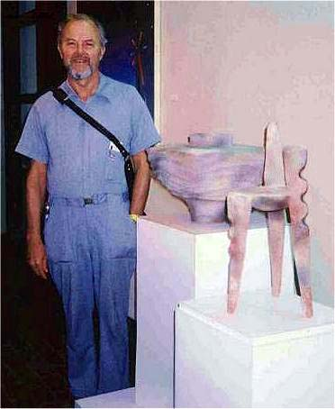
Ron du Bois, Faculty Exhibit. O.S.U. Art Department, Stillwater, OK, 1986.
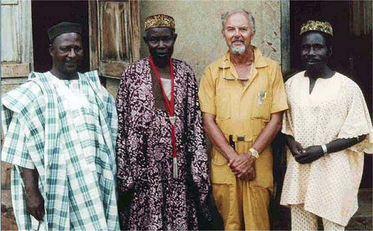
Ron du Bois with village dignitaries and Raphael Ibigbami, (ceramics instructor,
Art Department, Obafemi Awolowo University, Ile Ife) Ishan Ikiti, Nigeria,
1988.
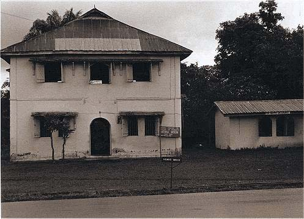
Ita Yemoo Museum of Yoruba Pottery, Ile Ife, Nigeria. The museum houses the
pottery collected in the 1960's and early 1970's by Ulli Beier and Georgina
Beier. Among these are wedding vessels estimated to have been made in origin
and age can not be estimated with certainty. The collection is now under the
direction of the Nigerian National Museum, National Commission for Museums
and Monuments. Photo by Ron du Bois, 1988.
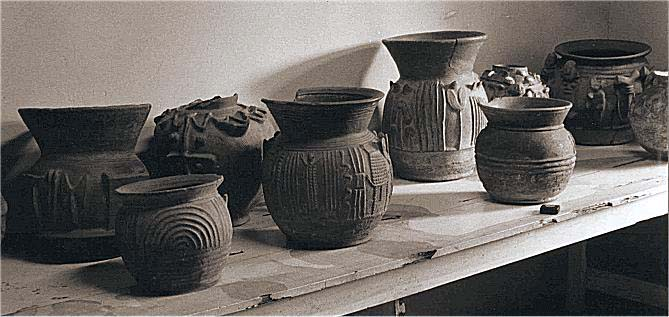
Shango Ritual Vessels. Earthenware. Ita Yemoo Museum of Yoruba Pottery, Ile
Ife, Nigeria. Photo by Ron du Bois, 1988.
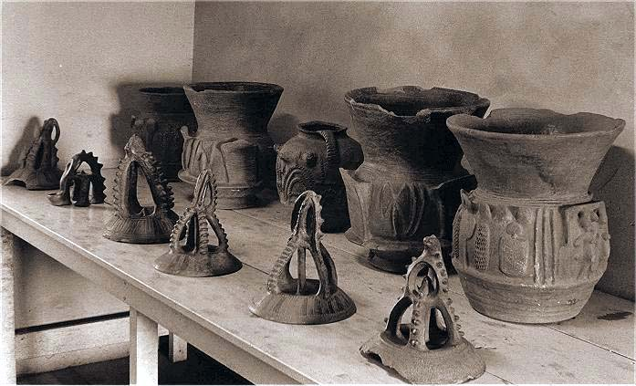
Shango ritual vessels and lidded forms. Earthenware. Ita Yemoo Museum of Yoruba
Pottery, Ile Ife, Nigeria. Photo by Ron du Bois, 1988.
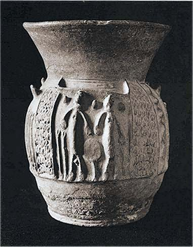
Shango Ritual Vessel (Shango odu) Terracotta, No. 66.1.13, Ita Yemoo Museum
of Youruba Pottery, Ile Ife, Nigeria. Photo by Ron du Bois, 1988.
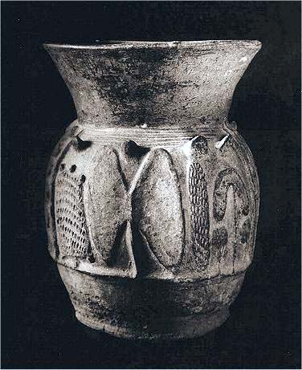
Shango Ritual Vessel (Shango odu) Terracotta, (Reverse view) No. 66.1.13,
Ita Yemoo Museum of Youruba Pottery, Ile Ife, Nigeria. Photo by Ron du Bois,
1988.
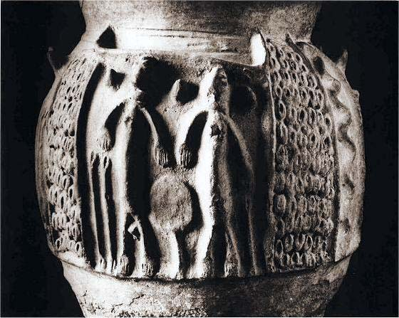
Shango Ritual Vessel (Shango odu) Terracotta, No. 66.1.13, Ita Yemoo Museum
of Youruba Pottery, Ile Ife, Nigeria. Photo by Ron du Bois, 1988.
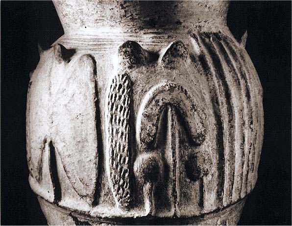
Shango Ritual Vessel (Shango odu) Terracotta, (Reverse view) No. 66.1.13,
Ita Yemoo Museum of Youruba Pottery, Ile Ife, Nigeria. Photo by Ron du Bois,
1988.
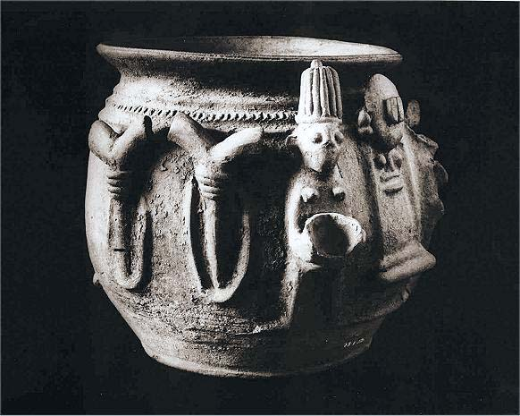
Terra-cotta vessel (ikoko Shango), No. 73.1.12, Ita Yemoo Museum of Youruba
Pottery, Ile Ife, Nigeria. Height, 14 1/2" inches. Width, 14 inches. Photo
by Ron du Bois, 1988.
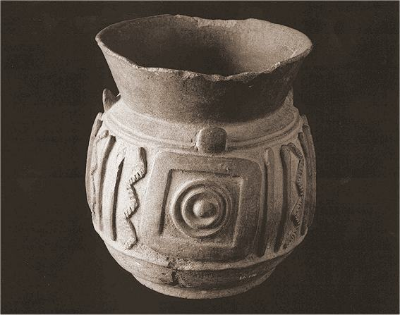
Terra-cotta ritual vessel (Shango odu) No. 66.1.16, 13 1/4" x 10 3/4", Ita
Yemoo Museum of Yoruba Pottery, Ile Ife, Nigeria. Photo by Ron du Bois, 1988.
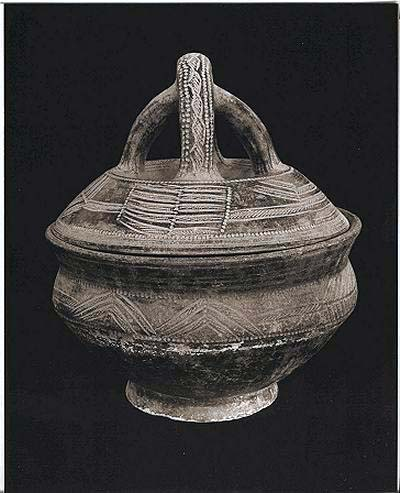
Ifa Divination Vessel, earthenware. Estimated 14" wide, 16" high. Incised
decoration, Ita Yemoo Museum of Yoruba Pottery, Ile Ife, Nigeria. Photo by
Ron du Bois, 1988.
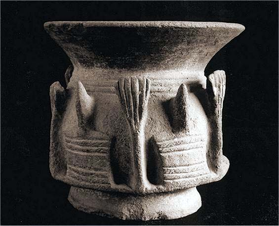
Shango Ritual Vessel (Shango odu), terracotta. Two identifying numbers are
marked on this vessel: (1) 66.1.12, (2) 72.3.20, 8 3/4" high, rim diameter
9 3/4", Ita Yemoo Museum of Yoruba Pottery, Ile Ife, Nigeria. Photo by Ron
du Bois, 1988.
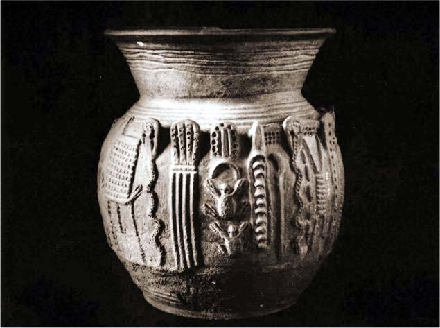
Terracotta vessel (Shango odo), detail, No. 66.1.14, 15 3/4" x 13", Ita Yemoo
Museum of Yoruba Pottery, Ile Ife, Nigeria. Photo by Ron du Bois, 1988.
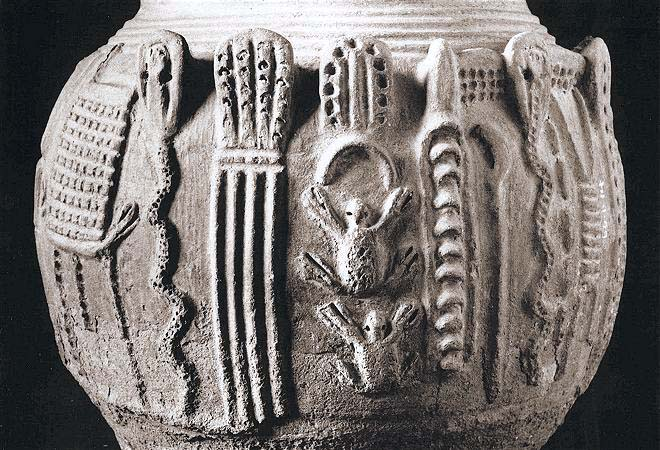
Terracotta vessel (Shango odo), detail, No. 66.1.14, 15 3/4" x 13", Ita Yemoo
Museum of Yoruba Pottery, Ile Ife, Nigeria. The potter (always a woman) applied
moist plastic clay to create images of lighting, earthworms, turtles, and
other messengers of ashe (vital force). The potter also modeled chiefly scepters
- an ideoplastic allusion to the inherent nobility of those who are receptacles
of divine power (ashe). Such vessels were commissioned and paid for by devotees
of Shango. Photo by Ron du Bois, 1988.
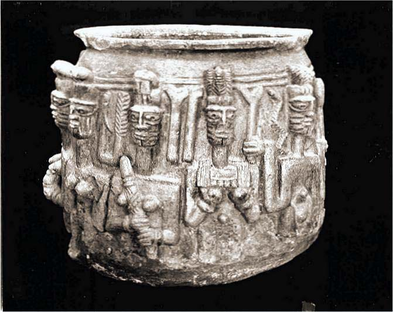
Shango ritual vessel, terracotta, Museum of the Department of Archeology,
African Studies Center, Obafemi Awolowo University, Ile Ife, Nigeria Photo
by Ron du Bois, 1988.
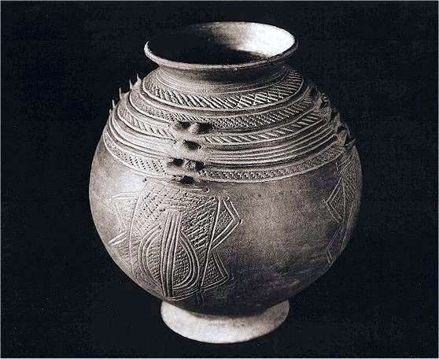
Yoruba Water Vessel, 13" high, rim 6 1/2", No. 72.3.114, Ita Yemoo Museum
of Yoruba Pottery, Ile Ife, Nigeria. Photo by Ron du Bois, 1988.
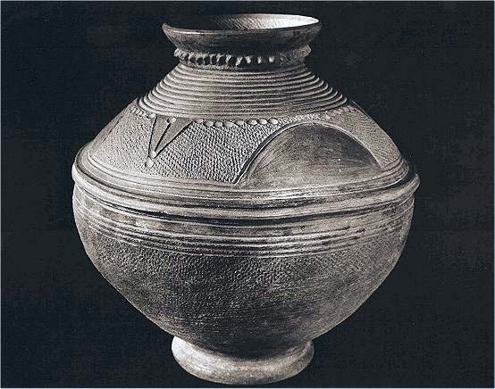
Terracotta Wedding Pot (ikoko igbeyawo) made in Ilafon-Ikiti, Nigeria about
1930. No 72.1.3, Ita Yemoo Museum of Yoruba Pottery, Ile Ife, Nigeria. Height
11", rim diameter, 7 1/8". Used to wash the bride's feet as she enters the
husband's house. Photo by Ron du Bois, 1988.
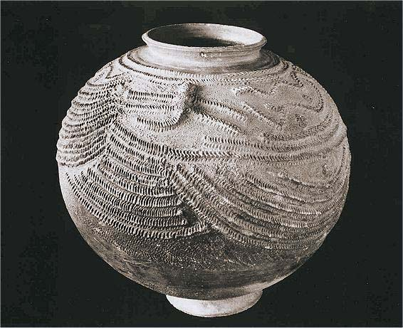
Yoruba Earthenware Vessel, 14 1/2" high, 6 3/8" rim diameter, said to have
been made in Owo or Okoko, No. 73.3.130, Ita Yemoo Museum of Yoruba Pottery,
Ile Ife, Nigeria. Photo by Ron du Bois, 1988.
Alhaja Sifawu Jimoh, master professional potter, Dada Compound, Ilorin, Nigeria.
Photo by Ron du Bois, 1988.